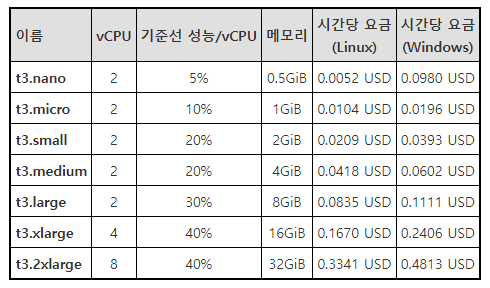
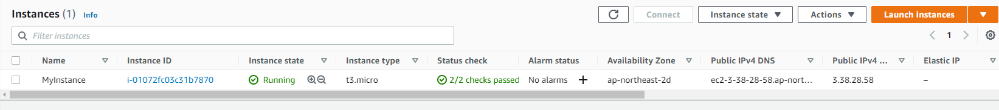

15. 리소스 관리
15.1 리소스 배포
1) 초기화
최초의 작업을 하면 프로방이더 모듈 설치함
3) 변경 사항 계획
terraform plan
dry run 이다 ansible의 --check와 같은 역할
5) 상태 확인
terraform.tfstate 파일 매우 매우 매우 중요함
- 먼저 실습을 해보자아~ ^^?! 193 ~ 202
써!
```tf
terraform {
required_providers {
aws = {
} } }source = "hashicorp/aws" version = "~> 3.34"
provider "aws" { profile = "default" region = "ap-northeast-2" }
resource "aws_instance" "my_instance" { ami = "ami-013b765873d42324a" # Ubuntu 18.04 amd64 ami instance_type = "t3.micro"
tags = { Name = "MyInstance" } }
정의할 메타속성(테라폼에서 관리)이 필요하다면 먼저 선언한다. resource 부분 상단에 작성.
테라폼 파일 자동 정렬
```shell
terraform fmt
- 프로바이더 플러그인 설치 ```shell terraform init # 이거 하고나면 해당 경로에 file 생겨남
azwell@azwell-KVM:~/terraform_prac$ file .terraform/providers/registry.terraform.io/hashicorp/aws/3.61.0/linux_amd64/terraform-provider-aws_v3.61.0_x5 .terraform/providers/registry.terraform.io/hashicorp/aws/3.61.0/linux_amd64/terraform-provider-aws_v3.61.0_x5: ELF 64-bit LSB executable, x86-64, version 1 (SYSV), statically linked, Go BuildID=m7TB9_vbkn6LKW2gtylx/A0DMvtaaRSewe8HULVvb/p05pEP56Ho6SF2FBNWdE/HxiWMsIxG0ome_rvdbVI, stripped
잘 썻다고 함
```shell
$ terraform validate
Success! The configuration is valid.
생퀴 어떻게 할지 함 보자
$ terraform plan
Terraform used the selected providers to generate the following execution plan. Resource actions are indicated with the
following symbols:
+ create
Terraform will perform the following actions:
# aws_instance.my_instance will be created
+ resource "aws_instance" "my_instance" {
+ ami = "ami-013b765873d42324a"
+ arn = (known after apply)
+ associate_public_ip_address = (known after apply)
+ availability_zone = (known after apply)
+ cpu_core_count = (known after apply)
+ cpu_threads_per_core = (known after apply)
+ disable_api_termination = (known after apply)
+ ebs_optimized = (known after apply)
+ get_password_data = false
+ host_id = (known after apply)
+ id = (known after apply)
+ instance_initiated_shutdown_behavior = (known after apply)
+ instance_state = (known after apply)
+ instance_type = "t3.micro"
+ ipv6_address_count = (known after apply)
+ ipv6_addresses = (known after apply)
+ key_name = (known after apply)
+ monitoring = (known after apply)
+ outpost_arn = (known after apply)
+ password_data = (known after apply)
+ placement_group = (known after apply)
+ primary_network_interface_id = (known after apply)
+ private_dns = (known after apply)
+ private_ip = (known after apply)
+ public_dns = (known after apply)
+ public_ip = (known after apply)
+ secondary_private_ips = (known after apply)
+ security_groups = (known after apply)
+ source_dest_check = true
+ subnet_id = (known after apply)
+ tags = {
+ "Name" = "MyInstance"
}
+ tags_all = {
+ "Name" = "MyInstance"
}
+ tenancy = (known after apply)
+ user_data = (known after apply)
+ user_data_base64 = (known after apply)
+ vpc_security_group_ids = (known after apply)
+ capacity_reservation_specification {
+ capacity_reservation_preference = (known after apply)
+ capacity_reservation_target {
+ capacity_reservation_id = (known after apply)
}
}
+ ebs_block_device {
+ delete_on_termination = (known after apply)
+ device_name = (known after apply)
+ encrypted = (known after apply)
+ iops = (known after apply)
+ kms_key_id = (known after apply)
+ snapshot_id = (known after apply)
+ tags = (known after apply)
+ throughput = (known after apply)
+ volume_id = (known after apply)
+ volume_size = (known after apply)
+ volume_type = (known after apply)
}
+ enclave_options {
+ enabled = (known after apply)
}
+ ephemeral_block_device {
+ device_name = (known after apply)
+ no_device = (known after apply)
+ virtual_name = (known after apply)
}
+ metadata_options {
+ http_endpoint = (known after apply)
+ http_put_response_hop_limit = (known after apply)
+ http_tokens = (known after apply)
}
+ network_interface {
+ delete_on_termination = (known after apply)
+ device_index = (known after apply)
+ network_interface_id = (known after apply)
}
+ root_block_device {
+ delete_on_termination = (known after apply)
+ device_name = (known after apply)
+ encrypted = (known after apply)
+ iops = (known after apply)
+ kms_key_id = (known after apply)
+ tags = (known after apply)
+ throughput = (known after apply)
+ volume_id = (known after apply)
+ volume_size = (known after apply)
+ volume_type = (known after apply)
}
}
Plan: 1 to add, 0 to change, 0 to destroy.
─────────────────────────────────────────────────────────────────────────────────────────────────────────────────────────────
Note: You didn't use the -out option to save this plan, so Terraform can't guarantee to take exactly these actions if you run
"terraform apply" now.
apply 때려보자 위에 plan 칠때 내용 똑같이 나오고 진짜 할꺼냐고 물어본다. yes 떄때료 때려버렷!
$ terraform plan
...plan 내용
Do you want to perform these actions?
Terraform will perform the actions described above.
Only 'yes' will be accepted to approve.
Enter a value: yes
aws_instance.my_instance: Creating...
aws_instance.my_instance: Still creating... [10s elapsed]
aws_instance.my_instance: Creation complete after 13s [id=i-01072fc03c31b7870]
Apply complete! Resources: 1 added, 0 changed, 0 destroyed.
인스턴스 종류 
잘 추가 되었음! 
현재 상태 검사
$ terraform show
# aws_instance.my_instance:
resource "aws_instance" "my_instance" {
ami = "ami-013b765873d42324a"
arn = "arn:aws:ec2:ap-northeast-2:766915375560:instance/i-01072fc03c31b7870"
associate_public_ip_address = true
availability_zone = "ap-northeast-2d"
cpu_core_count = 1
cpu_threads_per_core = 2
disable_api_termination = false
ebs_optimized = false
get_password_data = false
hibernation = false
id = "i-01072fc03c31b7870"
instance_initiated_shutdown_behavior = "stop"
instance_state = "running"
instance_type = "t3.micro"
ipv6_address_count = 0
ipv6_addresses = []
monitoring = false
primary_network_interface_id = "eni-0f1829a53074eb85c"
private_dns = "ip-172-31-52-6.ap-northeast-2.compute.internal"
private_ip = "172.31.52.6"
public_dns = "ec2-3-38-28-58.ap-northeast-2.compute.amazonaws.com"
public_ip = "3.38.28.58"
secondary_private_ips = []
security_groups = [
"default",
]
source_dest_check = true
subnet_id = "subnet-0328abd3c1fcaca2a"
tags = {
"Name" = "MyInstance"
}
tags_all = {
"Name" = "MyInstance"
}
tenancy = "default"
vpc_security_group_ids = [
"sg-0dd3742b1a21e3740",
]
capacity_reservation_specification {
capacity_reservation_preference = "open"
}
credit_specification {
cpu_credits = "unlimited"
}
enclave_options {
enabled = false
}
metadata_options {
http_endpoint = "enabled"
http_put_response_hop_limit = 1
http_tokens = "optional"
}
root_block_device {
delete_on_termination = true
device_name = "/dev/sda1"
encrypted = false
iops = 100
tags = {}
throughput = 0
volume_id = "vol-0bbbf7ca0bedf9a34"
volume_size = 8
volume_type = "gp2"
}
}
항상 apply 하고 나면 terraform.tfstate 파일이 생김. 중요한 파일임.
이전의 상태는 terraform.tfstate.backup 파일에 저장된다.
15.2 리소스 변경
ami 를 ami-0a0ac042031ba59d1 (Ubuntu 20.04 focal) 로 변경 하고 확인해보자 이미지를 교체할 수는 없기 떄문에 삭제하고 다시 생성한다.
$ terraform plan
aws_instance.my_instance: Refreshing state... [id=i-01072fc03c31b7870]
Terraform used the selected providers to generate the following execution plan. Resource actions are indicated with the
following symbols:
-/+ destroy and then create replacement
Terraform will perform the following actions:
# aws_instance.my_instance must be replaced
-/+ resource "aws_instance" "my_instance" {
~ ami = "ami-013b765873d42324a" -> "ami-0a0ac042031ba59d1" # forces replacement
~ arn = "arn:aws:ec2:ap-northeast-2:766915375560:instance/i-01072fc03c31b7870" -> (known after apply)
~ associate_public_ip_address = true -> (known after apply)
~ availability_zone = "ap-northeast-2d" -> (known after apply)
~ cpu_core_count = 1 -> (known after apply)
~ cpu_threads_per_core = 2 -> (known after apply)
~ disable_api_termination = false -> (known after apply)
~ ebs_optimized = false -> (known after apply)
- hibernation = false -> null
+ host_id = (known after apply)
~ id = "i-01072fc03c31b7870" -> (known after apply)
~ instance_initiated_shutdown_behavior = "stop" -> (known after apply)
~ instance_state = "running" -> (known after apply)
~ ipv6_address_count = 0 -> (known after apply)
~ ipv6_addresses = [] -> (known after apply)
+ key_name = (known after apply)
~ monitoring = false -> (known after apply)
+ outpost_arn = (known after apply)
+ password_data = (known after apply)
+ placement_group = (known after apply)
~ primary_network_interface_id = "eni-0f1829a53074eb85c" -> (known after apply)
~ private_dns = "ip-172-31-52-6.ap-northeast-2.compute.internal" -> (known after apply)
~ private_ip = "172.31.52.6" -> (known after apply)
~ public_dns = "ec2-3-38-28-58.ap-northeast-2.compute.amazonaws.com" -> (known after apply)
~ public_ip = "3.38.28.58" -> (known after apply)
~ secondary_private_ips = [] -> (known after apply)
~ security_groups = [
- "default",
] -> (known after apply)
~ subnet_id = "subnet-0328abd3c1fcaca2a" -> (known after apply)
tags = {
"Name" = "MyInstance"
}
~ tenancy = "default" -> (known after apply)
+ user_data = (known after apply)
+ user_data_base64 = (known after apply)
~ vpc_security_group_ids = [
- "sg-0dd3742b1a21e3740",
] -> (known after apply)
# (4 unchanged attributes hidden)
~ capacity_reservation_specification {
~ capacity_reservation_preference = "open" -> (known after apply)
+ capacity_reservation_target {
+ capacity_reservation_id = (known after apply)
}
}
- credit_specification {
- cpu_credits = "unlimited" -> null
}
+ ebs_block_device {
+ delete_on_termination = (known after apply)
+ device_name = (known after apply)
+ encrypted = (known after apply)
+ iops = (known after apply)
+ kms_key_id = (known after apply)
+ snapshot_id = (known after apply)
+ tags = (known after apply)
+ throughput = (known after apply)
+ volume_id = (known after apply)
+ volume_size = (known after apply)
+ volume_type = (known after apply)
}
~ enclave_options {
~ enabled = false -> (known after apply)
}
+ ephemeral_block_device {
+ device_name = (known after apply)
+ no_device = (known after apply)
+ virtual_name = (known after apply)
}
~ metadata_options {
~ http_endpoint = "enabled" -> (known after apply)
~ http_put_response_hop_limit = 1 -> (known after apply)
~ http_tokens = "optional" -> (known after apply)
}
+ network_interface {
+ delete_on_termination = (known after apply)
+ device_index = (known after apply)
+ network_interface_id = (known after apply)
}
~ root_block_device {
~ delete_on_termination = true -> (known after apply)
~ device_name = "/dev/sda1" -> (known after apply)
~ encrypted = false -> (known after apply)
~ iops = 100 -> (known after apply)
+ kms_key_id = (known after apply)
~ tags = {} -> (known after apply)
~ throughput = 0 -> (known after apply)
~ volume_id = "vol-0bbbf7ca0bedf9a34" -> (known after apply)
~ volume_size = 8 -> (known after apply)
~ volume_type = "gp2" -> (known after apply)
}
}
Plan: 1 to add, 0 to change, 1 to destroy.
─────────────────────────────────────────────────────────────────────────────────────────────────────────────────────────────
Note: You didn't use the -out option to save this plan, so Terraform can't guarantee to take exactly these actions if you run
"terraform apply" now.
...plan 내용
aws_instance.my_instance: Destroying... [id=i-01072fc03c31b7870]
aws_instance.my_instance: Still destroying... [id=i-01072fc03c31b7870, 10s elapsed]
aws_instance.my_instance: Still destroying... [id=i-01072fc03c31b7870, 20s elapsed]
aws_instance.my_instance: Still destroying... [id=i-01072fc03c31b7870, 30s elapsed]
aws_instance.my_instance: Still destroying... [id=i-01072fc03c31b7870, 40s elapsed]
aws_instance.my_instance: Still destroying... [id=i-01072fc03c31b7870, 50s elapsed]
aws_instance.my_instance: Destruction complete after 50s
aws_instance.my_instance: Creating...
aws_instance.my_instance: Still creating... [10s elapsed]
aws_instance.my_instance: Creation complete after 13s [id=i-0ac6810094d1ff76e]
Apply complete! Resources: 1 added, 0 changed, 1 destroyed.
15.3 리소스 삭제
$ terraform destroy
aws_instance.my_instance: Refreshing state... [id=i-0ac6810094d1ff76e]
Terraform used the selected providers to generate the following execution plan. Resource actions are indicated with the
following symbols:
- destroy
Terraform will perform the following actions:
# aws_instance.my_instance will be destroyed
- resource "aws_instance" "my_instance" {
- ami = "ami-0a0ac042031ba59d1" -> null
- arn = "arn:aws:ec2:ap-northeast-2:766915375560:instance/i-0ac6810094d1ff76e" -> null
- associate_public_ip_address = true -> null
- availability_zone = "ap-northeast-2d" -> null
- cpu_core_count = 1 -> null
- cpu_threads_per_core = 2 -> null
- disable_api_termination = false -> null
- ebs_optimized = false -> null
- get_password_data = false -> null
- hibernation = false -> null
- id = "i-0ac6810094d1ff76e" -> null
- instance_initiated_shutdown_behavior = "stop" -> null
- instance_state = "running" -> null
- instance_type = "t3.micro" -> null
- ipv6_address_count = 0 -> null
- ipv6_addresses = [] -> null
- monitoring = false -> null
- primary_network_interface_id = "eni-098fa8ccd2752a7ad" -> null
- private_dns = "ip-172-31-48-164.ap-northeast-2.compute.internal" -> null
- private_ip = "172.31.48.164" -> null
- public_dns = "ec2-3-38-112-209.ap-northeast-2.compute.amazonaws.com" -> null
- public_ip = "3.38.112.209" -> null
- secondary_private_ips = [] -> null
- security_groups = [
- "default",
] -> null
- source_dest_check = true -> null
- subnet_id = "subnet-0328abd3c1fcaca2a" -> null
- tags = {
- "Name" = "MyInstance"
} -> null
- tags_all = {
- "Name" = "MyInstance"
} -> null
- tenancy = "default" -> null
- vpc_security_group_ids = [
- "sg-0dd3742b1a21e3740",
] -> null
- capacity_reservation_specification {
- capacity_reservation_preference = "open" -> null
}
- credit_specification {
- cpu_credits = "unlimited" -> null
}
- enclave_options {
- enabled = false -> null
}
- metadata_options {
- http_endpoint = "enabled" -> null
- http_put_response_hop_limit = 1 -> null
- http_tokens = "optional" -> null
}
- root_block_device {
- delete_on_termination = true -> null
- device_name = "/dev/sda1" -> null
- encrypted = false -> null
- iops = 100 -> null
- tags = {} -> null
- throughput = 0 -> null
- volume_id = "vol-02e51bd29bcd752bd" -> null
- volume_size = 8 -> null
- volume_type = "gp2" -> null
}
}
Plan: 0 to add, 0 to change, 1 to destroy.
Do you really want to destroy all resources?
Terraform will destroy all your managed infrastructure, as shown above.
There is no undo. Only 'yes' will be accepted to confirm.
Enter a value: yes
aws_instance.my_instance: Destroying... [id=i-0ac6810094d1ff76e]
aws_instance.my_instance: Still destroying... [id=i-0ac6810094d1ff76e, 10s elapsed]
aws_instance.my_instance: Destruction complete after 19s
Destroy complete! Resources: 1 destroyed.
15.4 리소스 종속성
3) 암시적 종속성
테라폼이 리소스 간의 의존성을 분석해서 알아서 리소스를 생성, 변경, 삭제등의 순서를 결정함. 의존되는 대상의 인스턴스를 먼저 만든다.
4) 명시적 종속성
depends_on : 메타속성. 사용자가 리소스 간에 의존성을 명확하게 정의
5) 비 종속성
다른 리소스와 의존성을 가지고 있지 않은 리소스는 동시에 생성됨.
- 실습 따라하기
- provider.tf
```tf
terraform {
required_providers {
aws = {
} } }source = "hashicorp/aws" version = "~> 3.34"
provider "aws" { profile = "default" region = "ap-northeast-2" }
- main.tf
```tf
resource "aws_instance" "my_instance_a" {
ami = "ami-013b765873d42324a" # Ubuntu 18.04 amd64 ami
instance_type = "t3.micro"
tags = {
Name = "MyInstanceA"
}
}
resource "aws_instance" "my_instance_b" {
ami = "ami-013b765873d42324a" # Ubuntu 18.04 amd64 ami
instance_type = "t3.micro"
tags = {
Name = "MyInstanceB"
}
depends_on = [aws_s3_bucket.my_bucket]
}
resource "aws_eip" "my_eip" {
vpc = true
instance = aws_instance.my_instance_a.id
tags = {
Name = "MyInstanceA"
}
}
resource "aws_s3_bucket" "my_bucket" {
acl = "private"
}
20.04 하고싶으면 "ami-0a0ac042031ba59d1" # Ubuntu 20.04 focal
- 왜 깃헙에 tfstate 파일 올려서 관리하면 안되냐?!!! 외부아이피 내부아이피 저장소 그런거 정보 있어서 그런거 아닐깜?
- 오료오..
- 아항 서로 달라서!
- 내가 작업한 상태가 있어야 하는데 딴놈이 작업한 상태가 내쪽으로 와서 꼬인다는거 같음 오홍.. 오케이(일단..)